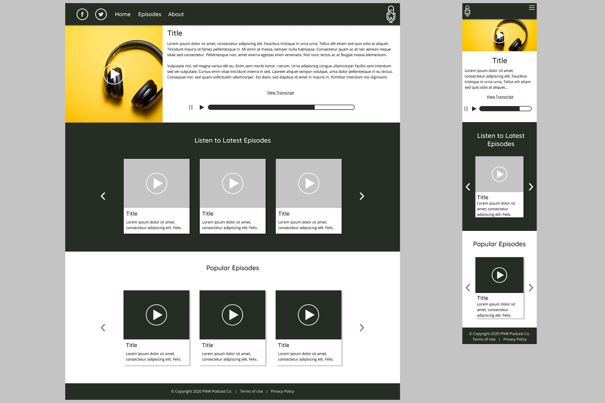

Project Details
UI Design & Branding Exercise | December 2020
The popularity of podcasts has steadily been increasing over the last decade. Most of my friends and professional contacts listen to podcasts pretty regularly on their morning commutes or in their homes for entertainment and news. According to Podcast Insights, 37% of the U.S. population has listened to a podcast within the last month and 24% (68 million people) listen to podcasts weekly. That's a lot of people tuning in to a specific type of content on a fairly regular basis.
This project started when I began to think about what kind of branding a local podcast company would have.
My Role
I set out to create some basic elements a brand would need to represent their company. I decided to create a logo, business card, and high fidelity prototypes for mobile and desktop.
Project Summary
This project was created as a personal exploration into my design process. I decided that the best way to further develop and showcase my skills was to create an original, fictional company. I researched similar companies, made design drafts and finalized the logo, created the layout for a business card, and produced prototypes for the company's online presence. The result is clean, easy to navigate, and expresses my own creativity.
Challenges
For a brand to be memorable, it needs to have a unique, recognizable logo and branding theme. I also wanted to use this as an opportunity to get feedback on my designs so I could further improve my skills.
Since this was a personal project and not for an external client, I was free to make my own decisions on some design choices like balance, placement, colors, etc. However, this comes with the drawback that I may not receive criticism that could potentially improve my designs for the better.
In addition, I had very little knowledge of the podcast industry, so tackling this project would come with a lot of new opportunities for learning.
Solutions
A logo needs to be recognizable but also simple to avoid overcomplexity. Too many lines, especially small lines, don't translate well when shrunk down and can get jumbled. There's also different kinds of logos, from letter marks to symbols to combinations and others. For this project, it made sense to use a letter mark since I already had the initials "PNW" to work with. To make it clear this was for a podcast, I chose to combine the initials with line art of a recording mic, which is a more common and recognizable symbol for audio-inspired icons.
As with most businesses, you need a business card to represent you and the work you do. To make it easy to read information at a glance, I made the contact name large and added recognizable icons next to the type of contact information. The logo is also large and present on both sides of the card. To add a bit of contrast interest, I made the last name a lighter color that the first name. The same is done on the other side of the card for the tagline.

For the mockup, I decided to showcase how it would look like for desktop and mobile users. While most people listen to podcasts on mobile devices, Buzzsprout reports that 33% of people use their computers to listen, which is still a good amount of listeners. A business also needs to have a way to engage their users. Some popular ways to do that are through social media and mailing lists.
I decided to make it easy for people to make a podcast account with a large sign up area on the homepage. If they already have an account, they will remain logged in or be able to sign in at the top. By scrolling down, a user will be able to listen to the newest episodes whether or not they have an account. If a user is signed in, they will receive popular episode recommendations based on their interests. These will be sorted by tags on each episode. Upon clicking the episode page or the play button on any listed episode, the user will be taken to the episode page that will play the episode, show the title, and transcription of the episode to read and follow along, which is an added measure for accessibility.
Results
From this project, I learned how valuable feedback is, even when working alone. I also learned techniques through trial and error that improved my design and presentation skills. I continue to welcome any feedback, so feel free to send me a message on your thoughts or critiques on how I can continue to improve.